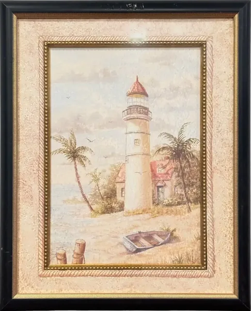
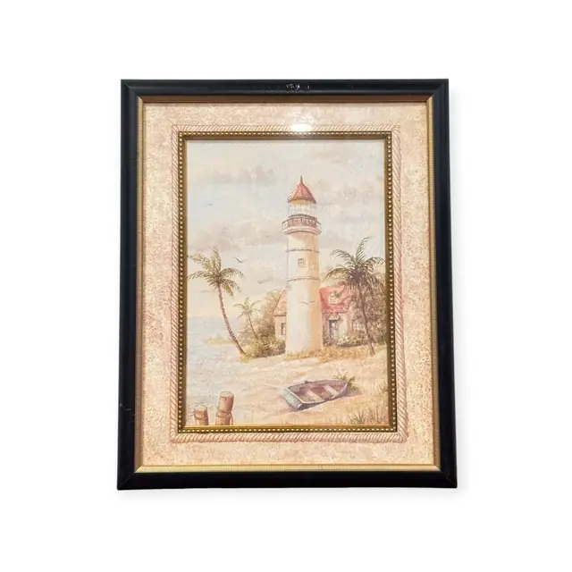
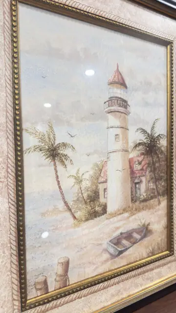
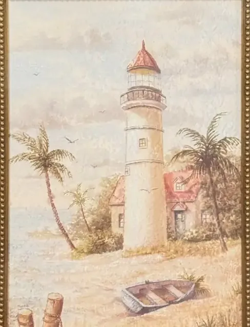
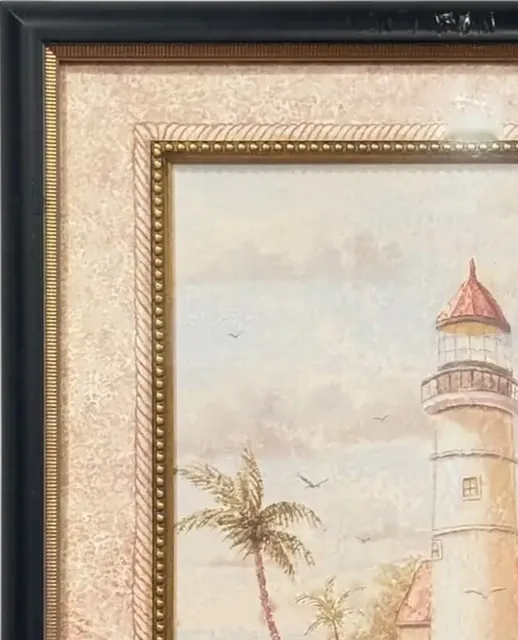
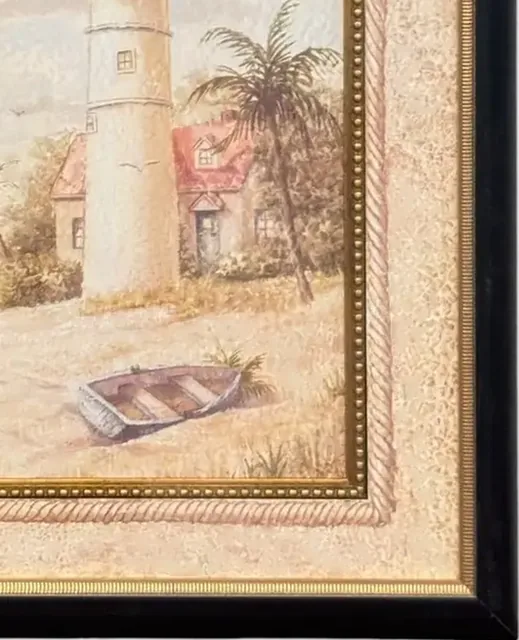
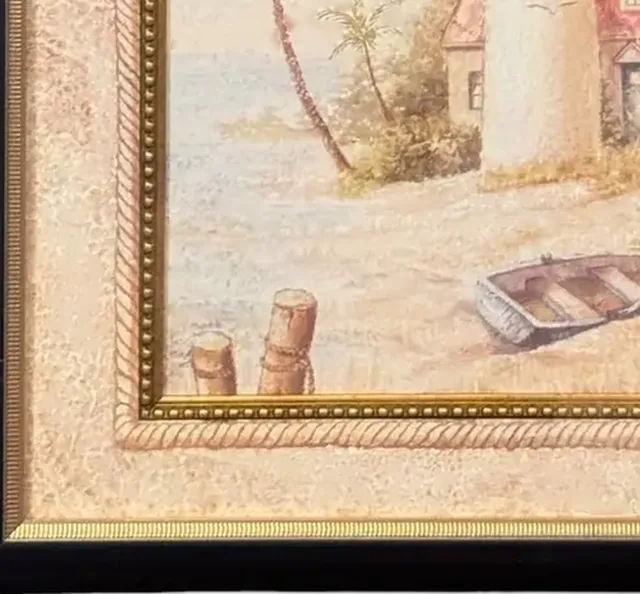
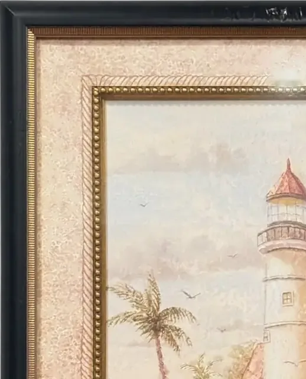

Paintings & Prints
Lighthouse and Palms Coastal Scene, Framed
· late 20th to early 21st century
Price Upon Request









About the Item
A soft, faded coastal view dominated by a tall pale lighthouse with a red-tiled cap and a railed gallery, set among low tile-roofed cottages. Two palms lean in from the left and right, gulls scatter across a hazy sky, and a grey clinker rowboat with wooden mooring posts rests on the sand in the foreground. The whole image is deliberately muted and antiqued, in bleached sand, chalky blue-green and dull terracotta, with a mottled crackle texture over the surface. It is set behind a wide marbled parchment mat with a gold beaded fillet. Medium: textured decorative reproduction print on board. Condition: No damage visible; several bright reflections from ceiling lights on the glass. Frame is clean with light dust.
Details
- Creation Year:
- late 20th to early 21st century
- Dimensions:
- Height: 22.5 in (57.15 cm)
Width: 18.25 in (46.36 cm)
outside of frame - Medium:
- textured decorative reproduction print on board
- Period:
- 21St
- Condition:
- Offered in the condition shown in the photographs.
- Reference Number:
- VO-78
- Documentation:
- no certificate photographed